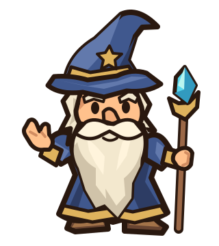

Наставник

Огромная борода, загнутая шляпа и короткие конечности. В сценах показан размер портрета для телефона. Все формы нарисованы вручную в SVG.
Открыть рисунок отдельно ↗Примеры подсказок
В игре шаг завершится по действию игрока; здесь переходы демонстрационные.